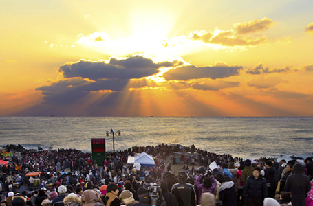
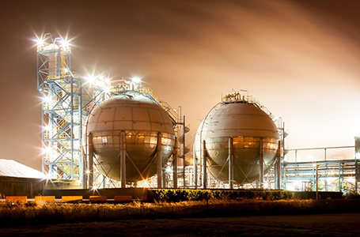

一般現況
- Home
- 蔚山の紹介
- 一般現況
北東アジアの戦略的な産業拠点
蔚山は韓半島(朝鮮半島)の東南部に位置し、気候は年中温厚で風水害がほとんどなく立地条件に恵まれています。人口は120万人、面積は1,060㎢とソウルの1.7倍に達します。
蔚山は海洋と大陸の接点に位置しているため、海洋と大陸への進出が容易と言えます。また、北京・上海・香港・東京・大阪など東アジアの主要都市に飛行機で2時間以内の到着でき、戦略的な拠点として卓越した立地条件を備えています。

蔚山の基本情報
| 人口(2017年) | 1人当たりの GRDP(2017年) |
面積(2017年) | 行政区域 (2017年) |
|---|---|---|---|
| 120万人 | 53,000ドル | 1,060㎢ | 4自治区・1郡 |
蔚山の気候
| 平均気温(2017年) | 14.1 ℃ | 1月 | 2.0 ℃ | 8月 | 25.9 ℃ |
|---|---|---|---|---|---|
| 降水量(2017年) | 671.4㎜ | 1月 | 15.3m | 8月 | 69.8mm |
広大な市場を持つ北東アジアの中心都市
韓国、中国、日本、台湾などが位置する北東アジアは世界人口の25%を占め、世界GDPの22%を生産し、世界で最も早いスピードで成長を遂げている経済ブロックです。同地域は、2020年頃には世界のGDPの30%を生産すると予想されており、今後の世界経済を牽引していくと考えられます。ダイナミックで強力な成長エンジンとして世界経済をリードしている北東アジア地域。その中心に蔚山があります。
北東アジアの経済潜在力

蔚山の経済規模

韓国最大の産業クラスター
蔚山は注力産業である自動車・造船・石油化学産業で韓国最大の産業クラスターを形成しています。各産業は連携し合いながら有機的な発展を図り、近隣の釜山・浦項・昌原地域の鉄鋼・機械・港湾分野と連携し、他の産業クラスターよりダイナミックで革新的なシナジー効果を発揮しています。
アジアを代表する産業クラスターを形成している蔚山は、投資家の皆様に多様なビジネスチャンスと魅力的な投資環境を提供しています。
蔚山の注力産業

エコポリス蔚山
美しい自然環境
蔚山には 加智山、神佛山、肝月山など1,000ｍ以上の7つの高山で繋がる嶺南アルプスが、まるで屏風のように都市を囲んでいます。 鮭、鮎、ウグイが戻ってくる澄んだ太和江が都心を流れ、多彩なフェスティバルと各種大会が開催されています。 また朱田 、亭子、鎮下浜辺へと繋がる蒼い東海がそばにある美しい都市です。
快適な都市環境
文化芸術会館、 蔚山博物館、ワールドカップスタジアム、 蔚山大公園など、多様な文化·体育施設、大型百貨店、総合流通売場、高級ホテル、大学病院などの生活便宜施設は美しい自然環境と共に快適な都市環境を作っています。
-

艮絶岬の日の出
-
 盤亀台
盤亀台 -

舞龍山から眺めた蔚山工業団地の夜景
-
 神仏山 ススキ平原
神仏山 ススキ平原